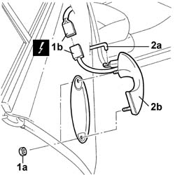

7010C10 Rear side door OUTER HANDLE - R.R. with door panel removed
- Path
- Procedures > 70 FITTINGS > 7010 passenger compartment rear side doors > 7010C REAR SIDE DOOR LOCK CONTROL CONTROLS > 7010C10 Rear side door OUTER HANDLE - R.R. with door panel removed
- Kind
- repair procedure (removal / refitting; the operation number is the code)
- Applies to
- all engines; all production periods
- Interactive page
- https://sloeber94.github.io/elrnDB-lThss/en/#/111191
Applies to: all engines; all production periods
 Removing
Removing
 Refitting
RefittingSee in Op. 5570T93 Rear side SPEAKER (one), left or right - R.R. with door panel removed
See in Op. 7010A04 Rear side door WATER GUARD PROTECTION - R.R. or Position with door panel removed
1. Undo the fixing bolts (1a) and disconnect the electrical connector (1b).
 | Description | Connector |
|---|---|---|
1b | Switch on driver's rear exterior handle | I024 |
| Description | Connector |
|---|---|---|
1b | Switch on passenger side rear exterior handle | I025 |
2. Disconnect the door opening idler (2a) and remove the handle (2b).

Applies to: all engines; all production periods
Refitting
Removing- Connect the door opening idler and place the handle in position.
- Connect the electrical connector and tighten the handle fixing bolts.
| Description | Connector |
|---|---|---|
. | Switch on driver's rear exterior handle | I024 |
| Description | Connector |
|---|---|---|
. | Switch on passenger side rear exterior handle | I025 |
- Check the operation of the outer handle.
See in Op. 7010A04 Rear side door WATER GUARD PROTECTION - R.R. or Position with door panel removed
See in Op. 5570T93 Rear side SPEAKER (one), left or right - R.R. with door panel removed
Topics linked from this page (2)
- 5570T93 Rear side SPEAKER (one), left or right - R.R. with door panel removed
- 7010A04 Rear side door WATER GUARD PROTECTION - R.R. or Position with door panel removed